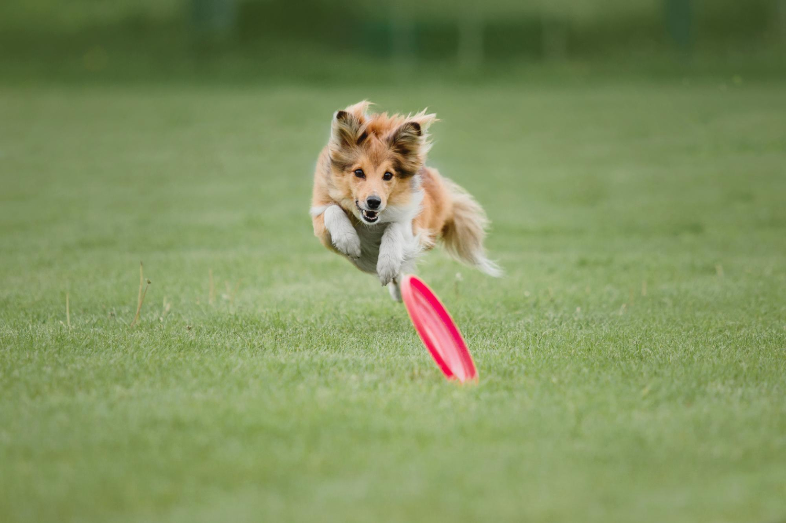

The Rise of Eco-Aware Pet Parents in India
India’s pet care market is booming, with nearly 30 million pets calling the country home. But this surge brings environmental challenges; from non-degradable waste to carbon-heavy food production and synthetic grooming products that harm waterways. Today’s pet parents, particularly in metropolitan areas like Delhi, Pune and Hyderabad, are acutely aware of these issues. They want assurance that their pet’s care routine, even when outsourced to a host or boarding service; doesn’t contribute to the same cycle of excess and pollution.
A new vocabulary has emerged in urban pet households: biodegradable wipes, compostable litter, cruelty-free treats, plant-based shampoos. The cultural influence of homegrown sustainability movements has only strengthened this awareness. In India, where traditional values already promote respect for nature and animals, it feels like an evolution rather than a trend; blending modern convenience with age-old ethics.
Eco-Friendly Spaces: The Physical Foundation of Sustainable Hosting
For hosts and sitters, sustainability begins with the physical space itself. Environmentally mindful boarding isn’t about constructing high-tech facilities, it’s about optimising what exists. Natural light, cross ventilation, washable surfaces and safe indoor plants can make a pet space both eco-positive and calming. Bamboo mats instead of synthetic ones, upcycled bedding made from repurposed fabrics, or non-toxic, odour-neutral cleaners (like diluted white vinegar) lower a host’s environmental footprint while improving pet health.
Even something as simple as switching to energy-efficient fans or LED lighting counts. Solar water geysers for bathing pets or motion-sensor lights in play areas make a strong impression on environmentally conscious clients. Many hosts in India are creatively localising global ideas: using leftover neem wood for scratching posts, terracotta bowls instead of plastic or jute ropes as playful enrichment tools. These tiny, rustic choices present authenticity, a quality Indian pet parents respond to immediately.
Low-Waste Grooming and Cleaning
Plastic-heavy grooming is one of the pet industry’s biggest sustainability pain points. A conscious host can tackle this with biodegradable wipes, shampoos made from plant-based surfactants and natural fur-care oils like coconut, olive or jojoba. Choosing brands that avoid parabens and sulfates also benefits the environment and the pets’ coats alike. Even replacing disposable gloves or paper towels with washable microfibre cloths reduces landfill waste dramatically.
Cleaning solutions can easily transition to greener alternatives: eco-certified floor cleaners, citrus enzyme solutions or mild baking soda-based blends are effective and pet-safe. For stain control in boarding areas, vinegar and lemon still hold their ground, perfectly in tune with Indian sustainability practices rooted in simplicity. When hosts advertise safety and toxin-free cleaning on their listings, eco-conscious clients view it as a premium differentiator: it signals thoughtful, holistic care.
Sustainable Feeding Practices
Food is an often-overlooked aspect of green pet care. Conscious pet parents already opt for high-quality, sustainable brands or locally sourced diets for their dogs and cats; hosts can mirror this approach through portion control, proper refrigeration and avoidance of unnecessary packaging. Composting leftover kibble or collaborating with local animal shelters to donate unused portions can reduce food waste meaningfully.
Hosts who provide home-cooked meals for boarding pets; from boiled chicken and rice to vegetable stews, have an added advantage. By using locally sourced vegetables or grain scraps, they significantly lower transport emissions tied to packaged pet food. Some urban boarders are even using stainless steel tiffin sets to prepare and serve meals sustainably. Replacing single-use plastic bowls with ceramic or metal not only looks neater but also avoids microplastic ingestion for pets who tend to chew. Sustainability here beautifully overlaps with health.
Water, Waste and Resource Management
Eco-friendly hosting also means being mindful of limited resources. Using low-flow nozzles for pet baths, collecting rainwater or reusing greywater for cleaning outdoor play areas can help reduce wastage. The Indian climate, particularly in cities facing water stress, demands that hosts integrate conservation into their care model.
Waste management deserves serious attention. Switching to compostable poop bags, biodegradable litter for cats or an in-house composting setup can transform environmental impact dramatically. For hosts dealing with multiple pets, segregating organic waste (fur, litter, leftover food) from recyclables creates a structure that’s both compliant and conscious. Partnering with city-level waste management initiatives; like Swachh Bharat teams or local composting groups, reinforces credibility as a sustainable enterprise.
Ethical Products and Partners
Collaborating with brands that carry environmental certifications or sustainable ethos further strengthens a host’s image. Whether it’s cruelty-free shampoos, hemp-based collars or natural rubber toys, these partnerships showcase alignment with a larger movement. Indian brands such as Heads Up For Tails and Supertails have already begun introducing eco-forward product lines; from vegan treats to compostable cleaning wipes. By incorporating such brands in your hosting services, you demonstrate awareness, accessibility and authenticity.
Even buying second-hand accessories, upcycling old leashes or supporting NGOs that repurpose textile waste for animal bedding can deepen your impact. Sustainability, after all, flourishes through community.

Educating and Involving Pet Parents
A host’s responsibility doesn’t end with practice; it blooms through advocacy. Sharing sustainability tips with clients; such as reusing packaging, choosing local treats or supporting indie pet artisans, creates ripple effects. Including eco-checklists in your onboarding materials (“We use biodegradable shampoos, LED lighting and water-saving wash stations”) bridges transparency and trust.
Some hosts go further by offering eco-pet kits for sale or as welcome gifts, containing plant-based treats, compostable bags or bamboo toothbrushes. Simple documentation detailing your eco-practices adds a professional, educational edge. This isn’t just marketing; it’s leadership through example. In time, word of mouth spreads and the “eco-leader host” becomes both a local favourite and an ethical benchmark.
The Rewards of Responsible Hosting
Green hosting practices inevitably deepen bonds between carers, pets and parents. They improve indoor air quality, lower stress among animals and save long-term costs through reduced resource use. Guests notice subtle cues; the earthy scent of wooden floors, the absence of harsh disinfectant odours or the calm of naturally ventilated play zones. Every detail becomes part of a sensory narrative that tells pet parents: your pet is cared for in harmony with the Earth.
More importantly, sustainable hosting is a brand story. In a hyper-competitive market of sitters, boarders and groomers, eco-consciousness becomes a signature differentiator. For modern Indian pet parents navigating climate anxiety and conscious consumption, choosing a green-minded host feels both morally right and emotionally secure.
A Future Rooted in Care and Consciousness
The ultimate goal of sustainable pet care is simple but profound, to ensure compassion extends beyond the pets we love to the planet we share. As urbanisation intensifies and pet ownership grows, making sustainability a business ethos isn’t just a personal statement; it’s a professional necessity.
Future-forward hosts in India are already proving that environmental mindfulness and quality pet care aren’t at odds. They are symbiotic, each enhancing the other. Whether it’s saving water, composting waste or switching to organic products, every small decision contributes to a larger vision of responsible companionship.
Because a truly loving host doesn’t just nurture a pet for a few nights; they help preserve a planet where that pet and all others can thrive for generations to come.